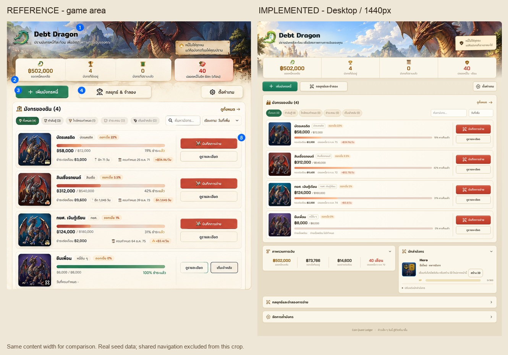
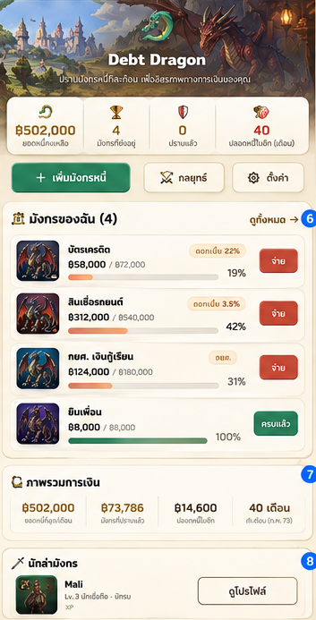
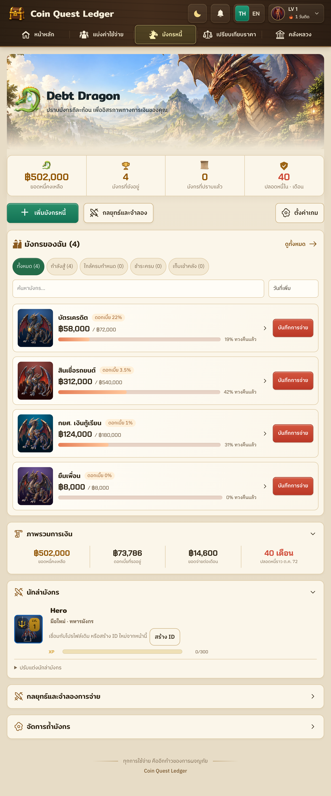
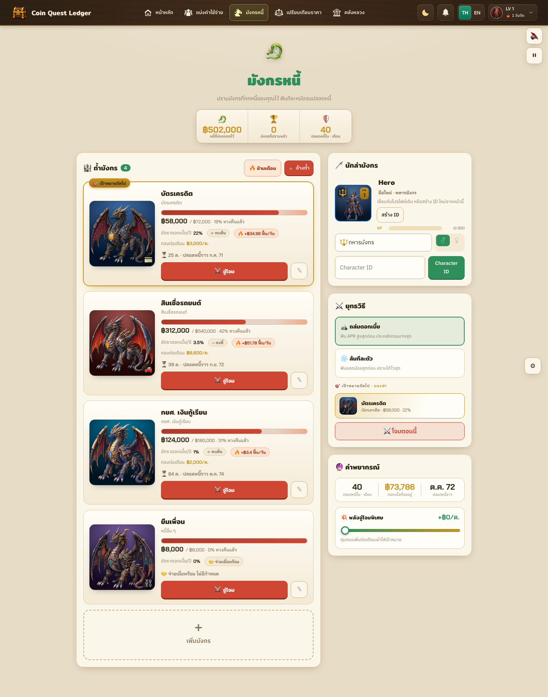
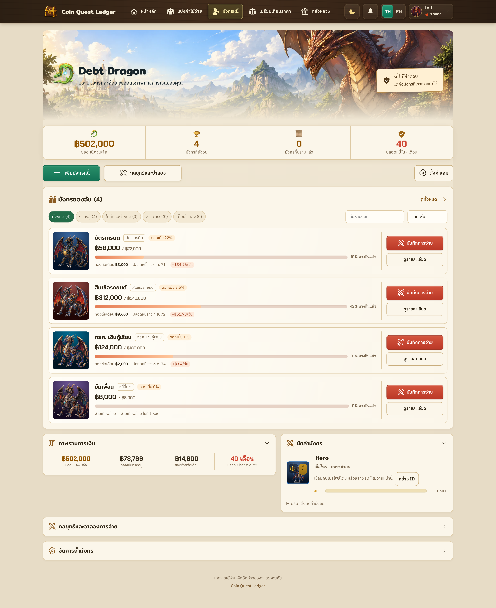

Debt Dragon — design review

เทียบพื้นที่เกมด้วยความกว้างเท่ากัน — ข้อมูลตัวอย่างใน mockup ต่างจากข้อมูลจริงของ fixtureดู Dungeon / English

Reference — เฉพาะเกม
Implementation 768px พร้อมเมนูเดิม
Before — ภาพที่บันทึกก่อนแก้
After — ข้อมูลและ viewport เดียวกัน